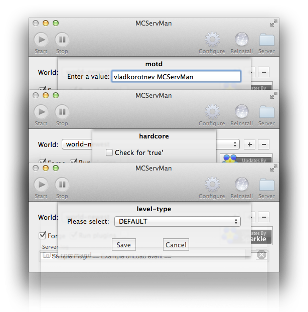

Abandoned software. This won't work with the modern Forge or Minecraft.
Minecraft server setup made simple


Timed server stop. Stop your server on time.
If you have to turn off your server, but there are still people playing, set up a timer. It will even post a notification time-to-time so the clients will know.
Extensible and flexible. Simple yet powerful plugin architecture.
Control iTunes on the server. Kick cheaters and griefers automatically. Schedule gamemodes. Write your own plugins.*

GUI configuration editor. No more typos in your config.
Double-click to edit an existing key, or press 'Add' to add a new one. Help text in the Add window was nicely provided by MinecraftWiki.

Local notifications. Never miss a thing.
*This feature requires 10.8 or higher